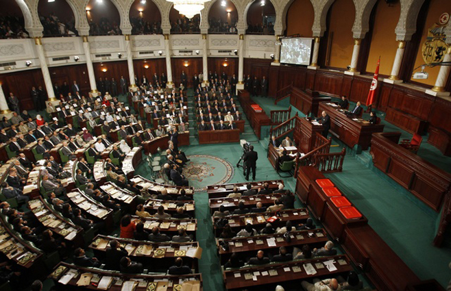

Constituent assembly

Main article: Constituent Assembly of India
It was drafted by the Constituent Assembly, which was elected by elected members of the provincial assemblies.[10] The 389 member Constituent Assembly took almost three years (two years, eleven months and eighteen days to be precise) to complete
its historic task of drafting the Constitution
for independent India, during which, it held eleven sessions over 165 days. Of these, 114 days were spent on the consideration of the draft Constitution. On 29 August 1947, the Constituent Assembly set up a Drafting Committee under the Chairmanship of
Dr. B.R. Ambedkar to prepare a draft Constitution for India.
While deliberating upon the draft Constitution, t
he assembly moved, discussed and disposed of as many as 2,473 amendments out of a total of 7,635 tabled.[11] Dr B.R. Ambedkar, Sanjay Phakey, Jawaharlal Nehru, C. Rajagopalachari, Rajendra Prasad, Sardar Vallabhbhai Patel, Kanaiyalal Munshi, Ganesh Vasudev Mavalankar,
Sandipkumar Patel, Maulana Abul Kalam Azad, Shyama Prasad Mukherjee, Nalini Ranjan Ghosh, and Balwantrai
Mehta were some important figures in the assembly. There were more than 30 members of the scheduled classes.
Frank Anthony represented the Anglo-Indian community, and the Parsis were represented by H. P. Modi. The Chairman of the Minorities Committee was Harendra Coomar Mookerjee, a distinguished Christian who represented all Christians other than Anglo-Indians.
Ari Bahadur Gurung represented the Gorkha Community.
[citation needed] Prominent jurists like Alladi Krishnaswamy Iyer, Benegal Narsing Rau and K. M. Munshi, Ganesh Mavlankar were also members of the Assembly.
Sarojini Naidu, Hansa Mehta, Durgabai Deshmukh, Rajkumari Amrit Kaur and Vijayalakshmi Pandit were important women members.[citation needed]
The first temporary 2-day president of the Constituent Assembly was Dr Sachchidananda Sinha. Later, Rajendra Prasad was elected president of the Constituent Assembly.[10] The members of the Constituent Assembly met for the first time on 9 December 1946.